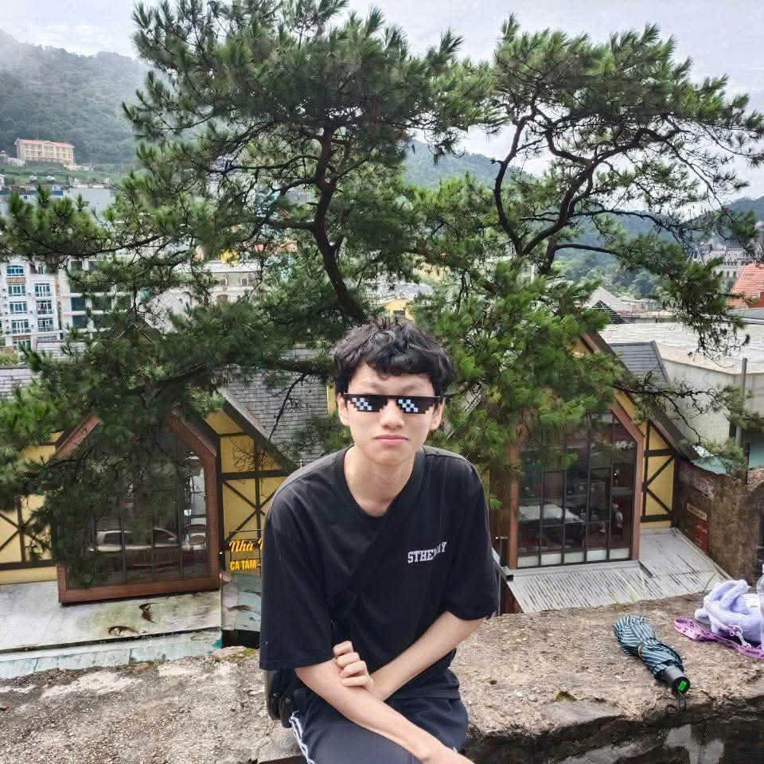

Lã Phúc Thanh
Mã sinh viên: 25002894
Ngày sinh: 12/12/2007
Lớp: DCCNTT 16.3
Trường: Đại học Công nghệ Đông Á
Sở thích
- Học tập
- Tìm hiểu code
- Thiết kế web
Điểm mạnh
- Tiếp thu nhanh
- Dễ hiểu kiến thức mới
Những người trẻ mang niềm đam mê và tự hào với ẩm thực Việt
Dự án website "Ẩm thực Việt Nam" được phát triển bởi nhóm sinh viên khoa Công nghệ Thông tin - Trường Đại học Công nghệ Đông Á (EAUT), nhằm tôn vinh nét đẹp văn hóa ẩm thực ba miền.
Thông tin chi tiết về từng thành viên tham gia nghiên cứu và xây dựng website ẩm thực ba miền.

Mã sinh viên: 25002894
Ngày sinh: 12/12/2007
Lớp: DCCNTT 16.3
Trường: Đại học Công nghệ Đông Á
Mã sinh viên: 25002672
Ngày sinh: 19/10/2007
Lớp: DCCNTT 16.3
Trường: Đại học Công nghệ Đông Á
Mã sinh viên: 25001692
Ngày sinh: 13/12/2007
Lớp: DCCNTT 16.2
Trường: Đại học Công nghệ Đông Á